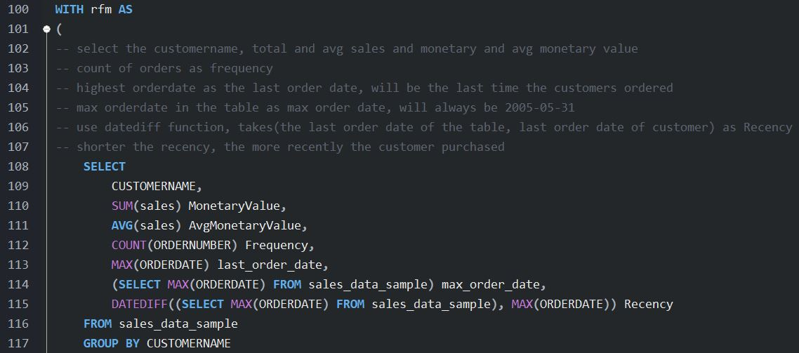
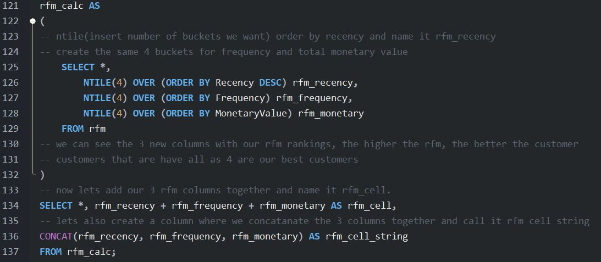

Welcome to my second SQL demo! Here I will use MySQL to extract insights from about 3,000 rows of raw sales data and then create an informative Tableau report for management decision making. We will explore the dataset and generate various analytics including the RFM customer segmentation technique and other insights from customers' past purchase behavior. All SQL code, Tableau URL and files are available at my GitHub: link here. The live Tableau report can be found: here.
SQL Skills used: JOINS, CASE STATEMENTS, Multi-layered COMMON TABLE EXPRESSIONS (CTE), AGGREGATE and WINDOW functions.
Here's how this will be done:
1. Obtain and extract existing dataset on company sales information into csv file
2. Query and transform the dataset using MySQL Workbench for insights on customer purchase behavior
3. Load the new queried dataset into Tableau for dashboard creation
4. Complete dashboard with visualizations for presentation to management
-
To begin, we acquire a fake sales dataset from Kaggle that contains around 3000 rows of data and import into csv:

-
MySQL Workbench is then used to create a new database called sales. The data is then imported to this database as the "sales_data_sample" table where we conduct all of our analysis:

-
For our initial analysis, we will look for unique values that we can plot on Tableau, start grouping and viewing different categories and monthly/yearly trends as well as location:

-
Now to find who our "best customer" is, we will conduct a Recency, Frequency and Monetary (RFM) analysis on the dataset. RFM is a marketing technique that allows us to rank and group customers based how recent, how frequent and how much they purchase. We will use temporary tables, common table expressions, window functions and case statements for this analysis. Please see note comments on what the code is doing:


-
So what we did is select sales revenue, count of sales and how recent the purchase by customer, used NTILE to group each category into 4 quartiles, print the results to a string and use case statements to select which string belongs to which rfm_segment. The end result here allows us to see which customer belongs to which segment and who our "best customers" are for managment decision making:

-
With our SQL work done, let's load the dataset into Tableau and create insightful reports that can tell us top selling products:

-
Top countries that we sell to:

-
Our largest customers:

-
And finally our monthly sales trends:

-
We have completed our Tableau dashboard, here is the full report that we can present to management: